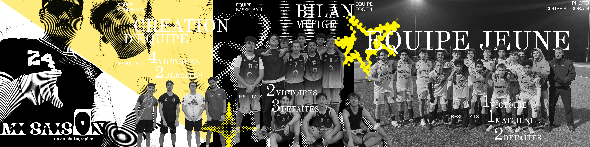

Saliency Bias
A study of saliency bias in quality assessment metrics for edited images, compared with human visual attention.
IEEE VCIP 2026 PAPER · FIRST AUTHORA VISUAL ARCHIVE BY

FIG. 001 / SPORTS SEASONA study of saliency bias in quality assessment metrics for edited images, compared with human visual attention.
IEEE VCIP 2026 PAPER · FIRST AUTHORTemporal and semantic video-frame selection to reduce token costs for multimodal models; exploration of LoRA.
CLIP · K-MEANS · LORADetecting and decoding barcodes directly from event-camera streams for resource-constrained drones.
EMBEDDED COMPUTER VISIONAn autonomous wildlife-monitoring prototype combining AI-based species classification, multimodal sensors, and automated reports.
EDGE AI · EMBEDDED SYSTEMSVisual identity, posters, and season imagery for Polytech Nantes sports teams.
Portraits and photographic fragments exploring reflections, distance, and light.
High-contrast images, patterns, and digital textures. A series of visual experiments.
A mental health awareness poster for UNICEF.
I’m Ewen Le Callet, a final-year engineering student at Polytech Nantes. I work on efficient AI and multimedia systems, and I also create images through graphic design, photography, and visual experimentation.
One last click before entering the archive.